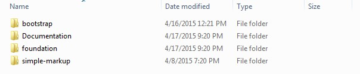
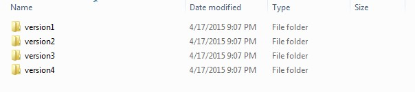

Brixtons - v1.0
- By: htmlbeans
- Support: Visit Our HelpDesk
Thank you for purchasing my theme. If you have any questions that are beyond the scope of this help file, please feel free to submit a ticket to us here. Thanks so much!
CSS FrameWork Structure
we have catgaries each folder as per their framework.
simple-markup means in this folder we have sliced markup with out useing any CSS framework
bootstrap means in this folder we have sliced markup useing Twitter Bootstrap
foundation means in this folder we have sliced markup useing Zurb Foundation 5
Page Structure
Note:
we have divded every version is a seprate folder
Head Structure
<head> <!-- set the encoding of your site > <meta charset="utf-8"> <meta name="viewport" content="width=device-width, initial-scale=1.0 "> <title>BRIXTONS LOUNGE</title> <!-- include Google Fonts --> <link type="text/css" rel="stylesheet" media="all" href="http://fonts.googleapis.com/
css?family=Playfair+Display:400,700,400italic,700italic%7cOswald:400,300%7cRaleway:400,300,500,600,700"> <!-- include the bootstrap stylesheet --> <link type="text/css" rel="stylesheet" media="all" href="css/all.css"> </head>
HTML Structure
This theme is developed in Twitter Bootstrap v3.2.0 . The main wrapper has id="wrapper", which contains header , main content and footer of site.Following is the basic structure of the page
Home Page
<!-- wrapper --> <div id="wrapper"> <!-- header --> <header id="header"> <div>...</div> </header> <!-- main --> <main id="main" role="main"> <div>...</div> </main> <!-- footer --> <footer id="footer"> <div>...</div> </footer> </div>
Everything is well documented with proper comments.
CSS Files and Structure
There is one css file and one google font that is used within the theme. These css files are attached in head section
<!-- include Google Fonts --> <link type="text/css" rel="stylesheet" media="all" href="http://fonts.googleapis.com/
css?family=Playfair+Display:400,700,400italic,700italic%7cOswald:400,300%7cRaleway:400,300,500,600,700"> <!-- include the bootstrap stylesheet --> <link type="text/css" rel="stylesheet" media="all" href="css/all.css">
Javascript Files
For simplicity and performance optimization we are using only one js file which consists all necessary Javascript functionality for this theme. All Javascript/Jquery files are placed below main wrapper just before closing body tag.
<!-- include jQuery Library --> <script type="text/javascript" src="js/jquery-1.11.2.min.js"></script> <!-- include custom JavaScript --> <script type="text/javascript" src="js/jquery.main.js"></script>
Credits
I've used the following images, icons or other files as listed.
- JQuery
- Font Awesome
Once again, thank you so much for purchasing this theme. As I said at the beginning, I'd be glad to help you if you have any questions relating to this theme. No guarantees, but I'll do my best to assist.